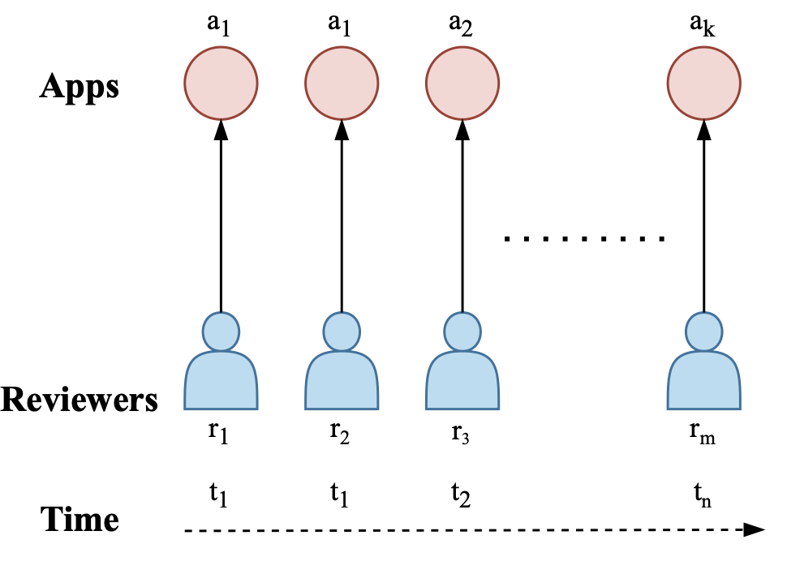
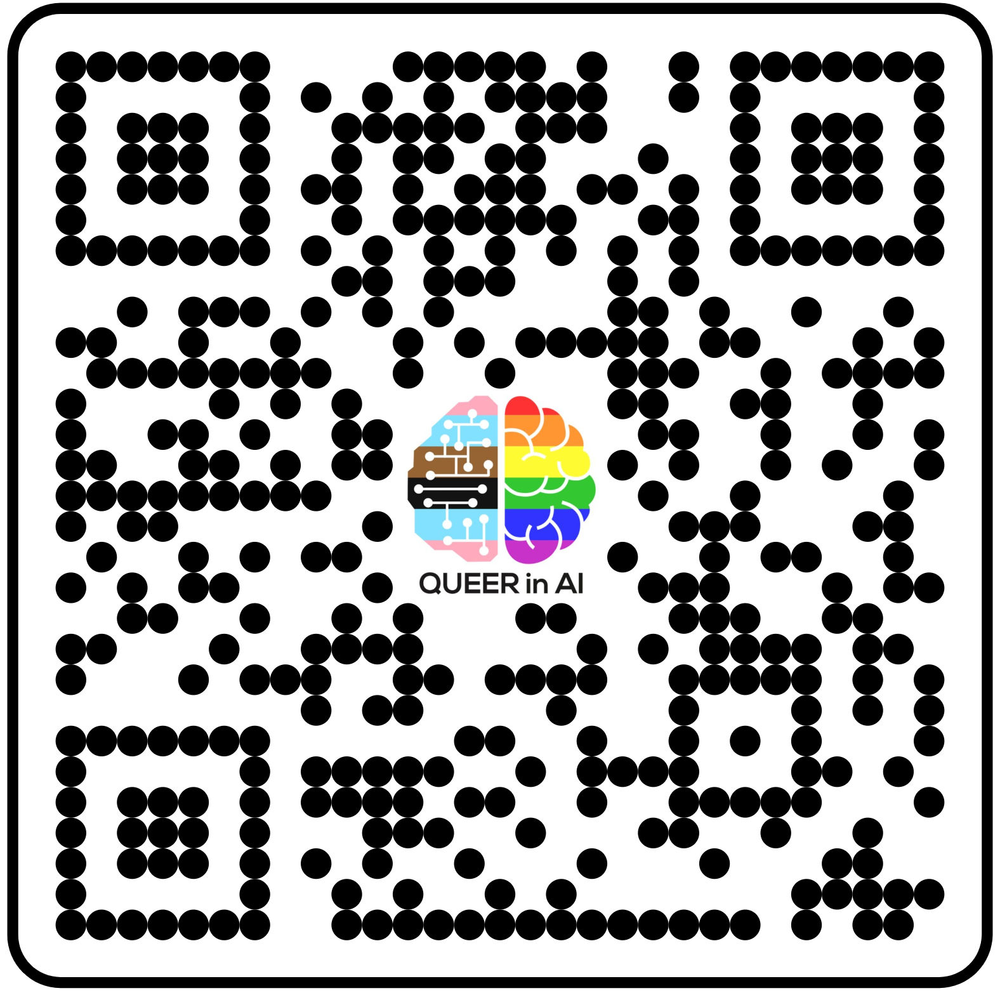
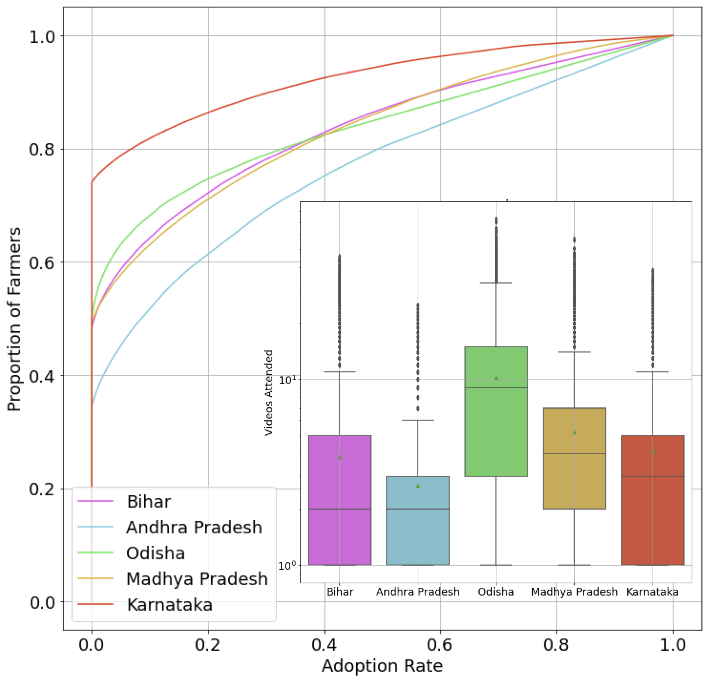
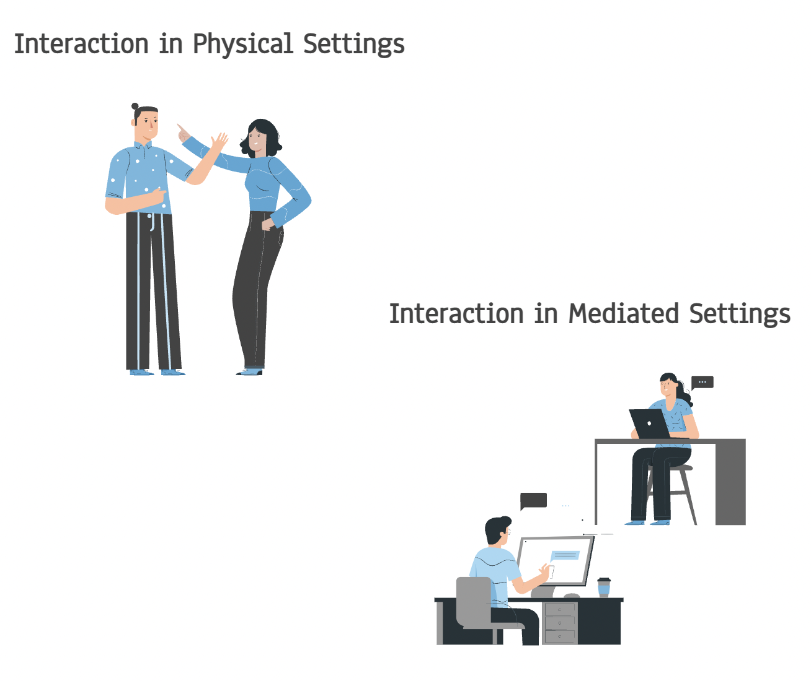

|
🔬 Research
My research interests broadly span computational social science and AI ethics. I use mixed-methods to diagnose and mitigate disparate impacts in socio-technical systems such as ICTs, social media, and other online platforms, with the long term goal of making these systems safe and inclusive for the margins of society.
Below, you can read more about some of my recent works.
|
|

|
Erasing Labor with Labor: Dark Patterns and Lockstep Behvaiors on Google Play
Ashwin S,
Arvindh Arun,
Pulak Malhotra,
Pooja Desur,
Ayushi Jain,
Duen Horng Chau,
Ponnurangam Kumaraguru
ACM Hypertext, 2022 | 📍 Barcelona, Spain
Paper
/
Data
/
Poster
/
Slides
/
Coverage in the AI Ethics Brief
We uncover how install-incentivizing fraud on Google Play is facilitated via dark patterns and lockstep behaviors, possible due to the exploited labor of users and crowdworkers.
|
|

|
QueerInAI Demographic Survey 2022-23
Ashwin S,
Organizers of QueerInAI
Led participatory design with QueerInAI's community to develop a new demographic survey for queer AI researchers and practitioners worldwide.
Through an intersectional lens, the survey facilitates understanding of issues and barriers covering several themes, including outness, social and legal climates, harassment, discrimination, and academic conferences.
|
|

|
Diagnosing Data from ICTs to Provide Focused Assistance in Agricultural Adoptions
Ashwin S,
Mallika Subramanian,
Anmol Agarwal,
Pratyush Priyadarshi,
Shrey Gupta,
Kiran Garimella,
Ponnurangam Kumaraguru,
Sanjeev Kumar,
Ritesh Kumar,
Lokesh Garg,
Erica Arya
ICTD, 2022 | 📍 Seattle, USA
arXiv
Our work in collaboration with Digital Green diagnoses their ICT for disparities in adoption rates of farming practices, identifies potential sources of inequalities and provides implications for alleviating adoption rates of nearly a million farmers in India.
|
|

|
Hanging Out Online: Social Life During the Pandemic
Ashwin S,
Grace Eden
IFIP INTERACT, 2021 | 📍 Bari, Italy
Paper
/
Slides
Dean's Special Award for significant achievements in BTech thesis (<2%)
Understanding how the shift from in-person to online computer-mediated social interaction presented opportunities and challenges for college students in India, generating implications for facilitating social serendipity, negotiating intimacy, mutual understanding and more.
|
|
⚖️ Advocacy
I belong to a marginalized caste-group (Bahujan) in India and identify as queer. Thus, my advocacy is focused around the regulation of AI systems that harm individuals at the intersection of caste, gender and sexuality.
- AAAI '22: Hosted Sai Bourothu at QueerInAI's workshop to talk about the lack of consideration for queer and trans identities in the digitization of criminal records in India and its implications for AI systems built on top of that data.
- NeurIPS '21: Moderated a Panel on Caste in Institutions and Tech at QueerInAI's workshop that involved scholars and activists from backgrounds spanning Anthropology, STS, Policy, Law and Economics. [Video] [Twitter Thread]
- Helped draft QueerInAI's approach to AI Risk Management, where I elaborated on various historical, social and political considerations that are key to preserving the inclusive and democratic nature of participatory design.
|
|
{kind=link}